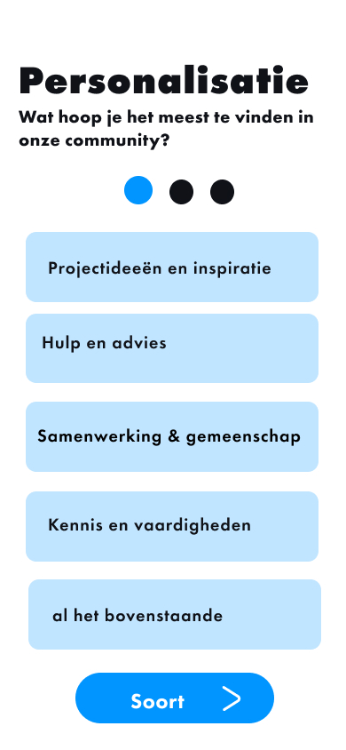
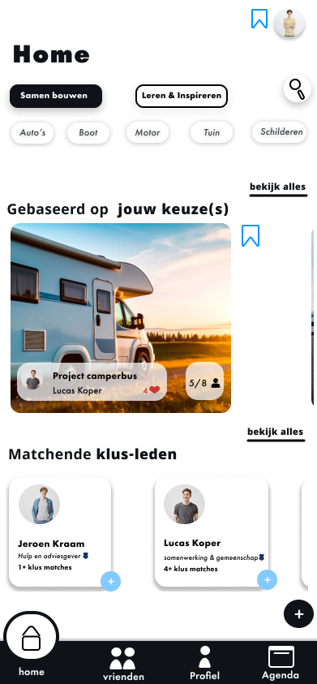
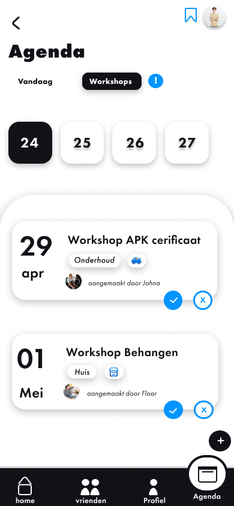
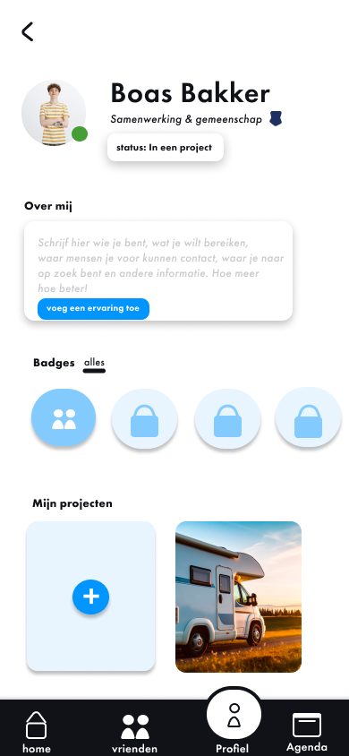
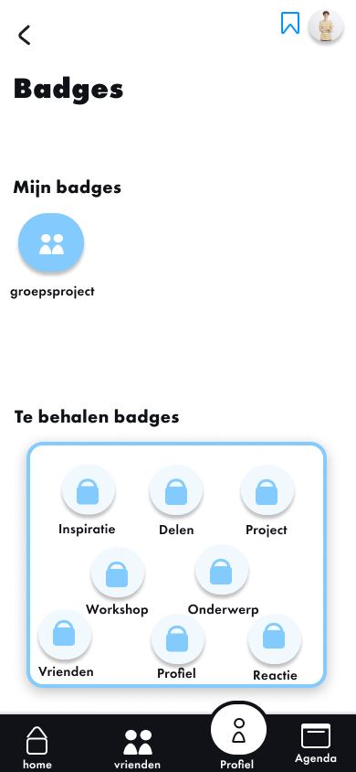

Klusswap
The Klusswap app was designed for the 'Project Community' assignment.
About the Assignment
In this project, we are given a target audience with a specific hobby, in this case, DIY projects. For this audience, the task was to create a digital or physical design with the goal of introducing the community to each other and making it easier for new members to join.
Problem Statement
By conducting interviews and applying various research and analysis methods, I gained in-depth insights into the target audience of Klusswap, a DIY app. These insights were captured in a detailed Empathy Map, which you can view throughout the project. The main issues this community faced included a lack of knowledge or experience for specific DIY projects, receiving criticism or judgment on their own work, fear of failure and making mistakes, and the financial costs associated with such projects. This empathy analysis helped to clearly map out the needs and pain points of users and served as the foundation for the design and solutions that improve their experience with the Klusswap app.
My Role
- UI Design
- Concept Development
- Interface Design
- UX Design
- Functional Design
- Brand Identity
- Sub-style
- Target Audience Focus
- User Experience
- Innovator
- Brainstorming
Branding
For the logo, I stayed within the minimalist theme, which is also reflected in the app itself. This minimalism helps convey the community's message: with Klusswap, you share DIY projects, experiences, tools, and help requests to support each other. The core message of the app can be summed up in one sentence: together, you are stronger than alone. This sentiment was also the most prominent in the user interviews.
Browse Klusswap
Click through the pages at the bottom of the screen.
Live Demo View on FigmaProject Images




